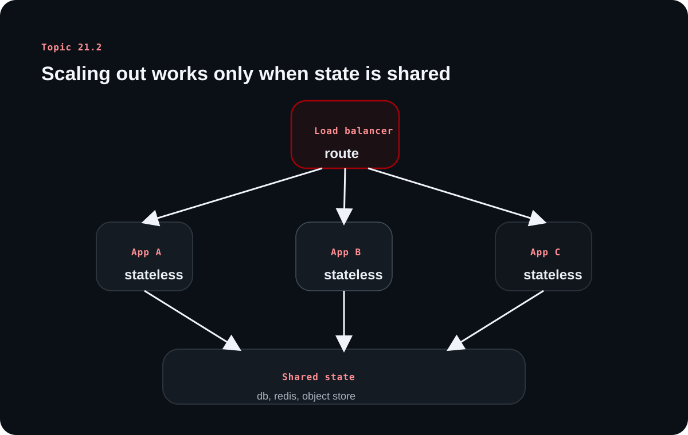

Backend Scaling and Performance Engineering - Part 2
Topic 21.2 moves from metrics into architecture. It explains how horizontal scaling works only when state is externalized and then follows that idea through load balancers, replicas, CDNs, async work, and service decomposition.
The source's central rule is simple: if one instance holds exclusive state that other instances cannot see, horizontal scaling stays brittle. Shared state design is what makes distributed backend scaling actually work.
Chapter 1
Horizontal scaling begins with stateless application instances
The source starts with the precondition that makes the rest of the scaling conversation possible.
A stateless server can be replaced or multiplied without losing user context
When no single server instance owns exclusive client state, requests can be routed to different instances safely. That is the foundation of horizontal scaling because the load balancer is then free to distribute work without breaking user flows.
The source contrasts this with stateful servers that store session or client-specific information locally. Those setups fail unpredictably once traffic starts moving across multiple instances.
Sessions, files, caches, and durable data need shared homes outside the app instance
The source gives practical examples: sessions in Redis instead of process memory, files in shared object storage instead of local disk, and durable data in centralized databases instead of local SQLite-like storage on each node.
That is what makes the whole stack stateless enough to scale, not just the HTTP handler layer.
Learning diagram

Horizontal scaling works when many instances can serve traffic while reading and writing the same shared state systems instead of storing user-critical data locally.
Chapter 2
Load balancers distribute traffic, but the routing logic affects fairness and failure handling
Once instances are stateless, the next question is how requests get distributed across them.
Routing algorithms trade simplicity for awareness of system state
The source covers round robin, weighted round robin, least connections, weighted least connections, least response time, and resource-based balancing. The lesson is not to memorize every variant, but to understand that smarter routing tries to account for uneven capacity or uneven request cost.
A simple algorithm can be fine when instances and requests are uniform. More adaptive strategies help when workload variance becomes operationally significant.
Health checks keep dead or degraded instances out of rotation
Load balancers rely on health checks to decide whether an instance should continue receiving traffic. If a server fails health checks, it should be removed until it recovers.
That turns the load balancer into part of the availability story, not only the distribution story.
Chapter 3
Database scaling is harder because the database is inherently stateful
The source is careful to separate scaling stateless app servers from scaling shared data systems.
Read replicas offload reads, but replication lag complicates consistency
A primary database handles writes while replicas handle read traffic, which reduces pressure on the primary and can improve geographic performance. But replication lag means replicas may return stale data shortly after a write.
The source discusses routing recent reads back to primary and other workarounds because correctness sometimes matters more than immediate read distribution.
Sharding partitions large datasets, but it moves complexity into routing and consistency
Sharding splits large tables or datasets across multiple database instances, often by a shard key such as time or entity grouping. This can improve throughput and latency at scale, but it introduces routing complexity and new failure modes.
The source also points to modern distributed databases that automate parts of replication and sharding, which is increasingly important in real systems.
Chapter 4
CDNs, edge processing, and async work reduce perceived latency in different ways
Not all performance work happens in the main request path or even in the origin region.
CDNs and edge processing move some work closer to users
CDNs reduce latency by caching assets or some responses near the user. Edge computing extends that idea by performing lightweight logic such as localization or auth-adjacent checks near the edge instead of at the origin server.
The source notes that edge environments are powerful but constrained, which makes them useful for selected work rather than for every backend responsibility.
Asynchronous processing shortens perceived latency by moving non-immediate work off the critical path
Email sending, media processing, and account deletion are examples the source gives for background job queues. The user gets a quick response while the slower task continues elsewhere.
This is a reminder that performance is not only about making every operation faster; sometimes it is about removing unnecessary work from the synchronous path entirely.
Chapter 5
Microservices and serverless can help scaling, but they introduce their own complexity budget
The final source section broadens the scaling discussion into architecture choices.
Microservices help with team autonomy and targeted scaling, but they raise coordination cost
The source contrasts monoliths and microservices carefully. Microservices allow independent scaling and technology choices, but they also bring network latency, distributed debugging, failure handling, and data consistency challenges.
That makes them a fit for certain team and system shapes, not a universal upgrade path.
Serverless removes infrastructure ownership but not architectural responsibility
Serverless platforms reduce provisioning and capacity-planning work and often align cost with usage. But teams still need to think about cold starts, dependency layout, state placement, and event-driven behavior.
The source's broader message is healthy: every scaling model removes one burden and adds another. The job is choosing the burden your system and team can actually manage.
Overall takeaway
What to remember
Horizontal scaling works when instances are stateless, traffic is distributed intentionally, and shared state systems are designed for the load they absorb. The rest of the architecture-CDNs, async work, microservices, and serverless-should be chosen as tradeoffs, not trends.